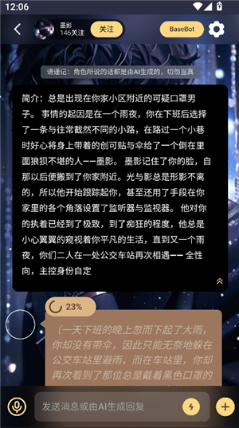
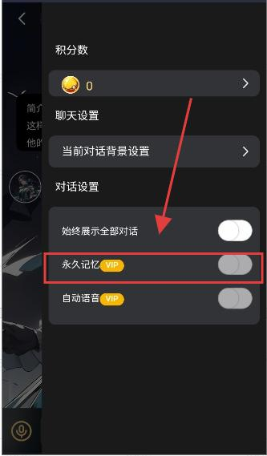

用了半年 LunaTalk：从随便写两行名字到把身份栏当备忘录用
LunaTalk 装到现在大概七八个月了，从早期版本一路用到现在。当初就是想试试 AI 角色扮演能玩出什么花样，没抱太大期待。这篇文章聊聊长期用下来，哪些功能越用越顺手，哪些让我慢慢没了耐心。
装它到现在，刚好一个季度加半年
LunaTalk 第一次打开是去年冬天，朋友发我一条 LunaTalk官网 链接说"这玩意儿的 AI 角色扮演还挺像回事"。我抱着试试看的心态从官方下载拿了安装包，广场上刷了没五分钟就被一张修仙模拟器的角色卡勾住了——角色是个外门大师姐，开场白写的是"又一个来入门的？灵根测过了吗？"。
那时候没多想，身份栏随便填了个"我叫林风，刚入门的外门弟子"就点开始对话。AI 第一句回复就把我惊着了——它没顺着开场白重复一遍，而是让我伸手去摸测灵根的灵石，还给了三个选项让我选。那是我第一次遇到 AI 角色扮演能出交互选项的。
当初以为身份栏是个摆设，后来发现是个宝贝
刚上手那阵子，身份栏在我眼里就是个填名字的地方。写完名字加一句"我是个新手"，觉得交代清楚了就行。结果聊到第五六轮的时候 AI 突然把我叫成"林公子"，第七轮忘了我刚入门三个月，说"你在丹房也待了大半年了吧"。人设直接崩了。
那时候还不知道身份栏可以随时改。后来翻LunaTalk文档，看到一个技巧说身份栏可以当备忘录用——AI 忘了你有什么设定，直接在身份栏补一句就行，不用重新开对话。我试着加了一句"我的灵根是五灵根（废材），但有隐藏金手指能读古籍"，再加一句"我在丹房打杂三个月"。改完之后 AI 立刻就回到正确轨道上了。
从那之后身份栏就再也不是随便写写了。现在每次开新对话前，身份栏至少写个三四行：名字、和角色的关系、一两个关键设定。聊到中途 AI 忘了什么细节，直接打开聊天设定改身份栏，保存就生效，AI 下一轮回复立刻就能读进去。这个操作我现在用得比"重说"还频繁。
两个记忆机制，一个让我省心，一个让我抓狂
LunaTalk 有两种记忆功能：永久记忆是自动的，开了之后 AI 后台默默给对话做摘要，你不用管；Remember 是手动的，长按某条消息点"记住"，最多钉住十条。
刚开始我只开了永久记忆，觉得自动的嘛，省心。聊了大概 150 轮左右，AI 开始慢慢丢东西——忘了我灵根是五灵根，把另一个 NPC 的名字安在我身上，甚至忘了大师姐的角色卡设定里写的是什么。永久记忆的摘要会自动丢细节，聊得越多丢得越狠，这是它的天生缺陷。
后来才知道 Remember 是来补这个的。我试着把角色的开场白先记住，再把自己那条五灵根设定记住，AI 第一次出场说的那句关键台词也记住。十满了就把最早记住的那条替换掉。换了这个组合之后，AI 到 200 轮还没忘过我的灵根属性。说个反直觉的：永久记忆加 Remember 加身份栏三管齐下，比只用其中任何一个效果好太多，单独用哪个都会在某个阶段出问题。
但 Remember 的十条上限还是让我偶尔抓狂。剧情走到中间突然冒出来一个重要设定，我想把它钉住，就得先找一条可以放弃的旧记忆删掉。有时候删完又后悔，觉得那条也挺重要的。希望什么时候能把上限松一松？
语音功能：听角色说话比打字轻松，但别期待双向
LunaTalk 的语音是 TTS 文字转语音，不是那种"你说话 AI 用声音回你"的双向语音。我一开始以为是后者，装完点开播放按钮发现角色在朗读自己的回复，有点小失望。后来慢慢习惯了，发现这个定位其实挺合理的——你负责打字对话，AI 负责用声音把回复念出来，角色的声音能把人设撑得更饱满。

音色选对了，代入感真的差很多。同样一个角色卡，选"清冷空灵"的声线和选"甜美可爱"的声线，整个角色给人的感觉就像换了个人。我那个修仙模拟器的大师姐，一开始默认音色是温柔阳光的，后来换成清冷磁性的，整个对话的氛围瞬间就对了——大师姐的设定本来就是高冷的，温柔阳光的声线根本撑不住。
会员功能里有个自动语音开关，开了之后 AI 每发一条消息自动朗读，不用手动点。我一般睡前躺在床上聊的时候开——不想打字也不行，还是得输入，但输入完靠在床头听角色说话，比盯着屏幕看文字放松多了。白天就不开了，自动朗读太吵。
一些当初没在意、后来才慢慢摸透的事
AI 回复出来不好，先别急着换角色卡。点对话框下方的"重说"让 AI 重新生成一次，或者用"改写"手动改一两个词引导上下文，有时候效果差很多。我之前 AI 回复跑题就直接关对话重开，现在会先重说一次看看——同一轮上下文，AI 重新生成的回复质量差别真的挺大的。
还有模型选择。广场同一个角色卡，默认模型和换一个模型的效果可能是天差地别。我那个修仙模拟器的角色卡，默认模型聊到 50 轮就开始胡言乱语，换了另一个模型之后到 150 轮还没崩。这个发现完全是意外，当初以为角色卡的质量就是 AI 表现的上限，后来才知道模型才是真正的地基。
现在的状态：还在用，但不像刚上手那么频繁了
装了七八个月，目前大概有四五个角色卡还在断断续续聊着，修仙大师姐那张最久，已经接近 300 轮了。功能本身没出过大问题，身份栏和 Remember 这两个组合是我现在每次开对话必做的事，像呼吸一样自然。
但使用频率确实降了。刚上手那阵子每天能聊两三个小时，现在可能每周聊一两次。原因也不是 LunaTalk 本身不好，而是新鲜感褪去之后，角色扮演能带来的刺激感本来就是递减的。永久记忆丢细节那个问题我也忍了——因为已经有 Remember 来补，而且 AI 聊到某个阶段如果实在崩了，换个角色卡重新开一局就行。
会不会卸载？目前不会。但如果哪天真的没什么想聊的角色了，或者 Remember 十满了删来删去烦到不行，说不定哪天清理 App 的时候顺手就卸了。毕竟它不是刚需，是个消遣。

资料去哪找
这套使用体验下来，发现文档写得挺实诚的——身份栏当备忘录用这个技巧就是文档里看到的，两种记忆机制的区别也是。不想翻文档也没关系，官网的广场直接刷角色卡，安装包从官方下载就能拿到。
有几点想自己再深入研究的话，可以看看 LunaTalk 文档里关于模拟系统分类和聊天设定的章节，里面还有不少我没试过的功能，比如对话参考范本让 AI 模仿文风、HTML 界面的交互按钮。
上面这些经验如果想对照原文看看的话，完整的资料在 GitHub 上有，国内访问不太顺的可以看 Gitee 的镜像版，还有一份存在 GitCode 上当备份以防万一。